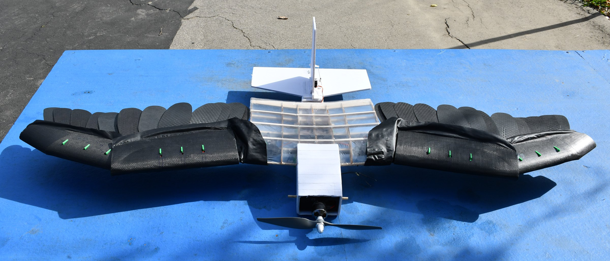
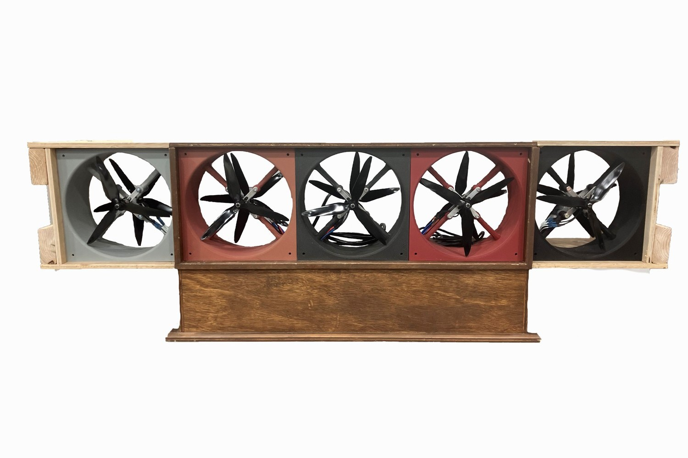
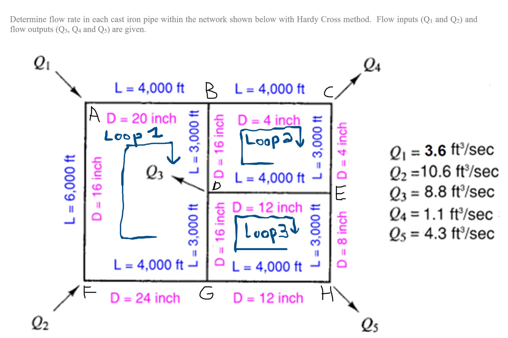

Mechanical Engineering Graduate · Test Systems & Prototyping
Engineering systems
from concept
through validation.
I am a mechanical engineering graduate of California State University, Northridge and led the development of testing infrastructure for a 17 person team developing The SMART Hawk, a shape morphing UAV. Entrusted with responsibility for the project's experimental test systems, I designed, built, and coordinated the implementation of a 5 module wind generator, an advanced aircraft stand, and a load cell thrust stand used to support aircraft validation. My work spans mechanical fabrication, instrumentation, embedded controls, and web interfaces using Arduino, ESP32, and NVIDIA Jetson platforms.
Primary aircraft program
The SMART Hawk
A 1.67 kg, 1.2m span UAV that replaces conventional wings with independently morphing wings and a 3 axis feathered tail. The program required purpose built systems, and analytical tools for development and validation.

Aircraft test infrastructure
3 systems developed for validation
The SMART Hawk exceeded the dimensional capacity of CSUN's available wind tunnels. The team therefore developed dedicated airflow, controlled motion, and propulsion test systems to generate repeatable data under laboratory conditions.

The Wind Generator
Expanded a 3 module fan array to 5 modules and 10 independently controlled motors, enabling full span airflow testing through a Jetson based control system.
View The Wind Generator →
The Bird Stand
Designed and fabricated a steel reinforced stand that constrains translation while allowing pitch and roll about the aircraft's center of gravity.
View The Bird Stand →
The Thrust Stand
Rebuilt a load cell test rig used to select a 1250 KV motor and 11 × 5.5 propeller, achieving 18 N of static thrust and a 1.1 thrust to weight ratio.
View The Thrust Stand →Independent fluid systems analysis
Engineering analysis
An independent numerical study developed to compare pipe network friction models and quantify their effect on converged flow distribution and outlet pressure.

The Hardy Cross Calculator
Developed an Excel based Hardy Cross solver for a 10 pipe, 3 loop cast iron network, completing 8 iterations per loop to compare Darcy Weisbach and Hazen Williams results.
View The Hardy Cross Calculator →Contact
Engineering opportunities and collaboration
I am available for mechanical engineering opportunities involving test system development, electromechanical prototyping, instrumentation, controls integration, and design validation.